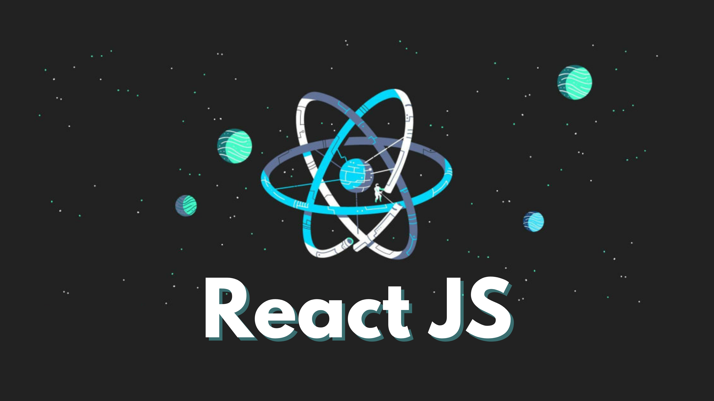

Ma veille technologique se concentre sur deux domaines d'une importance cruciale dans le monde des technologies: le framework Spring de Java et l'Internet des Objets (IoT).
Le framework Spring est une plateforme de développement d'application Java Java qui fournit une infrastructure complète pour simplifier le développement en proposant des fonctionnalités telles que l'inversion de contrôle, l' injection de dépendances et la facilitation du développement d'applications d'entreprise robustes et évolutives. Quant à l' IoT, il désigne un réseau d'objets physiques connectés entre eux et à Internet, ouvrant la voie à une multitude d'applications allant de la domotique à l'industrie 4.0 . Cette veille permettra d'explorer les synergies entre ces deux domaines et d'identifier les opportunités et les défis qui émergent de leur convergence.
J'assure principalement ma veille grâce à Google News et Inoreader

IOT
Comprendre l'IOT et ces impacts
L'Internet des objets (IoT) révolutionne nos vies en connectant des objets physiques à l'Internet, permettant la collecte et l'échange de données. De la maison intelligente à la santé, l'IoT améliore l'efficacité et la commodité, mais soulève également des préoccupations en matière de sécurité. Avec des milliards de dispositifs connectés prévus d'ici 2030, l'IoT façonne notre avenir numérique et stimule la croissance économique.
IOT et la BIG DATA
Comment ces deux technologies se compensent?
L'IoT et le Big Data s'allient pour exploiter efficacement les données massives générées par les appareils connectés. Cette collaboration permet le développement d'applications intelligentes capables de prédire des événements, d'optimiser des processus et de comprendre les comportements des utilisateurs. En intégrant ces deux domaines, les entreprises peuvent exploiter pleinement les insights pour offrir des solutions innovantes, ouvrant ainsi la voie à un avenir où la technologie transforme notre interaction avec le monde

React.JS
Qu'est ce que React.JS
React.js a révolutionné le développement web avec son approche modulaire et réutilisable pour les interfaces utilisateur dynamiques. Grâce à JSX et à sa syntaxe déclarative, il offre une efficacité et des performances exceptionnelles, consolidant ainsi sa position dominante dans le développement front-end moderne.

Sprint BOOT
Q'est ce que c'est ??
Spring Boot, un framework Java, simplifie considérablement le processus de développement d'applications en automatisant la configuration et en offrant des fonctionnalités prêtes à l'emploi. Son approche 'convention-over-configuration' libère les développeurs des tâches fastidieuses, faisant de sa maîtrise un atout précieux pour tout étudiant en informatique souhaitant exceller dans le développement logiciel